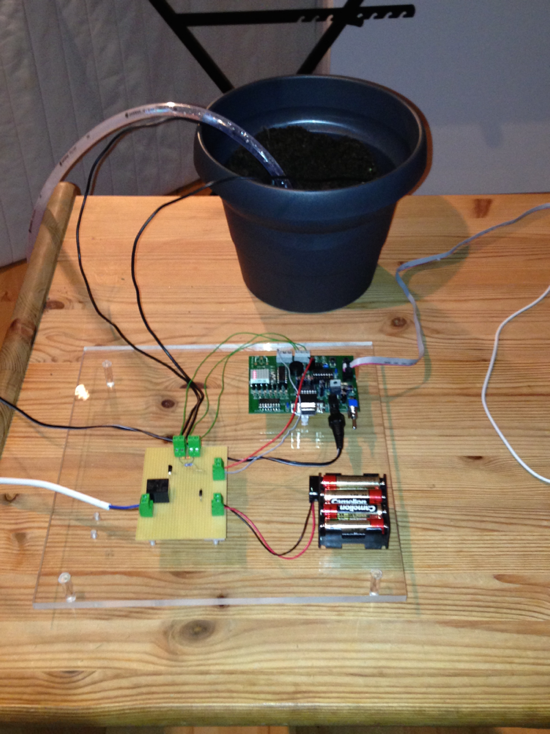
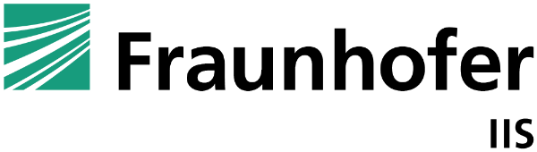

During my senior year in high school I saw an article in the newspaper by our famous Fraunhofer Institut (Applied Science Institut).

They were looking for students for an embedded systems internship with a competition at the end. I applied immediatley and got in.
They gave us a dev board (USB Spyder08 from freescale) with several introduction sessions. We basically came in on weekends and they showed us the basics by buidling some sample projects.
After the initial training persiod we should come up with our own idea and build it during the next 9 months. After these nine months we all came back together again and they judged our projects.
UWater is a system which takes care that your plants get enough water while you are on vacation.
UWater meassures the degree of humidity in the earth of the plant pot by using the ressistance between two nails which are put into the plant pot. The higher the ressistance, the lower the degree of humidity of the earth in the plant pot is. With that knowledge UWater controls a little water pump to fill water in the plant pot and increase the degree of humidity again.
The concept is really basic - but it works surprisingly well.
The hardest part was to adjust the scale for the degree of humidity and figuring out how to control the water pump.
It was an honor to present my project at one of their exhibitions! ![uwaterpresentation]!(images/uwaterpresentation.png)
…. at the end I won the first price!
After I won the first price, I got a job offer as a working student.
I accepted and spent about 1.5 year working on microcontroller projects with similiar hardware I had already used.
At the end my learning curve decreased and I left for a startup!
As always, I would love to hear your feedback!
Shoot me an email: info(at)janruettinger.com